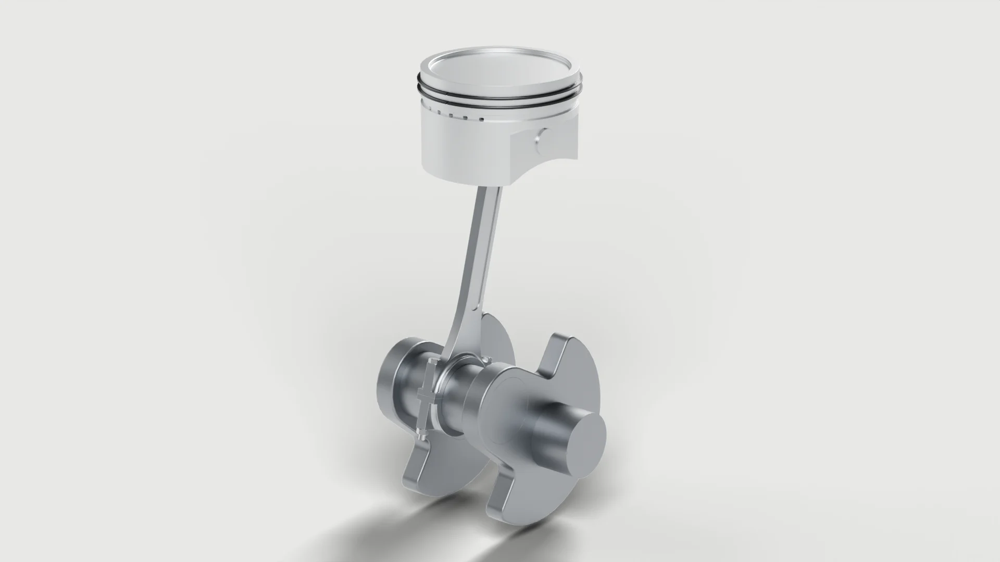

01
Piston assembly
A single-cylinder piston, connecting rod and counterweighted crank. Drag the model and the rod and piston follow the crank.

- Crank angle
- 55°
- Piston travel
- 0.0 mm
- Rod angle
- 0.0°
Loading 3D model
- Software
- Autodesk Fusion
- Bore × stroke
- 70 × 80 mm
- Rod length
- 120 mm, centre to centre
- Parts
- 17, in three sub-assemblies